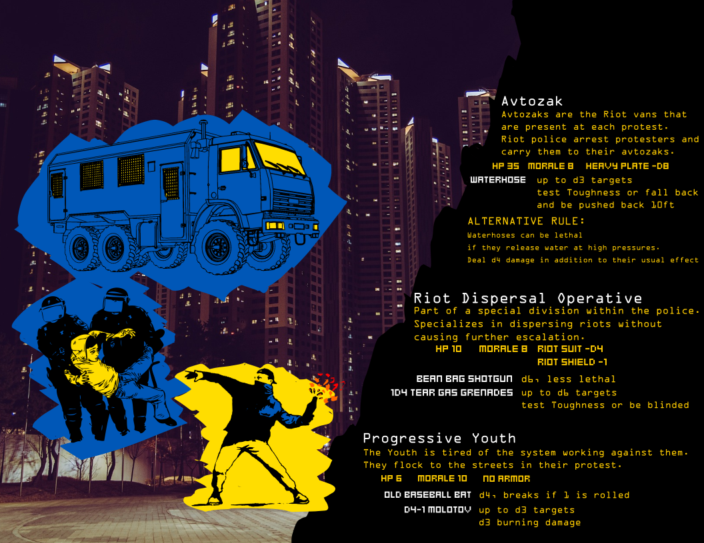
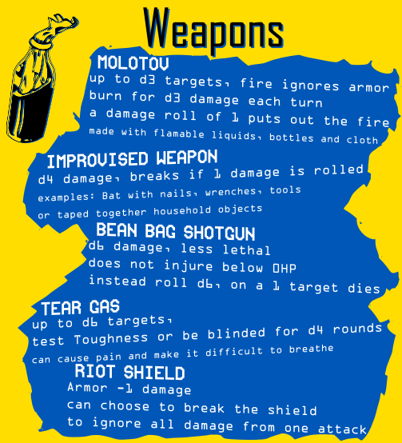

Purpose
This is a tabletop module for the game called Cy_Borg. It provides game mechanics expansion for the theme of protests and revolutions. It is inspired by the Maidan Revolution and the song "Avtozak" by the band Zhadan I Sobaky.
Outcomes
From the mechanics perspective, there are not that many new mechanics to the system of Cy_Borg, but the theme of the module really puts a lot of new content in terms of what the players can do. The core game did not touch particularly on the idea of riots, so this expansion succeeds by making the game master think of new scenario possibilities for the players. The content that is there is significant enough to help the game master start on the plot, but it is vague, which allows for creativity and imagination from the players to fill the gaps.
